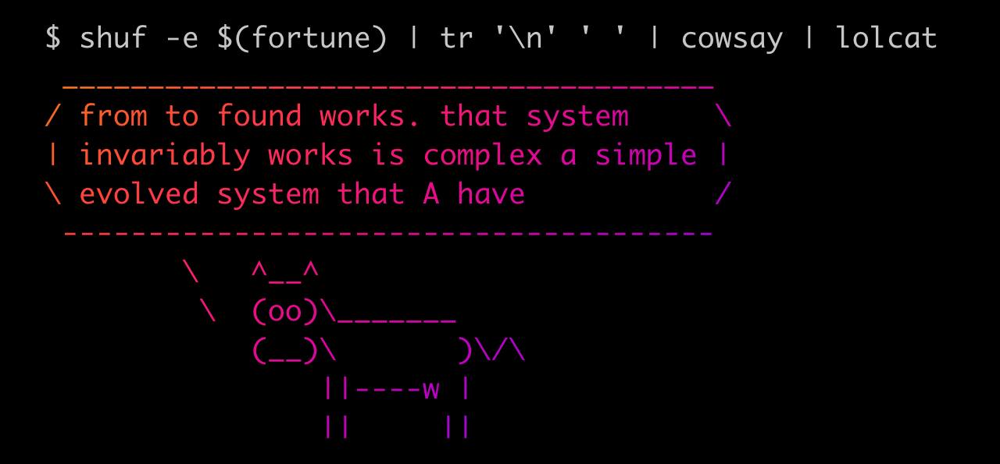

WTF is NR filter chain not found?
WTF Is A Filter Chain?
Envoy supports an exceptional amount of flexibility by providing an extensive library of "proxy primitives" and allowing users to compose them together. Think of it like doing for network processing what redirection, pipes, and command substitution does for composing a flexible assemblage of shell programs.

Envoy calls these proxy primitives "filters" and when they're wired together that's (you guessed it!) a filter chain. Instead of doing things like drawing ASCII art and randomizing lines of text, Envoy filters do things like decode protocols, collect statistics, and route traffic.
Why Can't It Be Found?
Not long after users got accustomed to building out complex filter chains they wanted a way to do branching logic. Specifically, they wanted a way to do things like decrypting some TLS traffic while blindly forwarding the rest to be handled elsewhere.
IF tls.SNI == "foo.com" THEN
decrypt_with("./foo.pem")
ELSE
route_to("backend.default.svc.cluster.local")The configuration structure which supports this type of branching is called a filter chain match and it allows users to examine the properties of an incoming connection and then choose an arbitrary filter chain to process that connection based on the properties it finds.
Istio leverages Envoy filter chain matching to support use cases like hosting multiple domains on a single ingress gateway and choosing a different TLS certificate depending on the SNI of the incoming request. But crucially, when Istio creates this configuration, there is no ELSE clause.
IF tls.SNI == "foo.com" THEN
decrypt_with("./foo.pem")
ELIF tls.SNI == "bar.com" THEN
decrypt_with("./bar.pem")
ELSE
// what happens here?Now What?
Assuming your Gateway and VirtualService (or HTTPRoute if you're going Gateway API) resources are all correct, the most likely culprit is that your client application is not actually sending the correct SNI during the TLS handshake. Let me guess, were you trying something like this?
$ curl --header "host: yourdomain.com" https://<your_ingress_gw_ip_here>
curl: (35) Recv failure: Connection reset by peerAnd then you get something like this in your ingress gateway logs?
[2025-02-05T20:43:48.376Z] "- - -" 0 NR filter_chain_not_found - "-" 0 0 8 - "-" "-" "-" "-" "-" - - 10.42.0.145:8443 10.42.0.1:49186 - -The explanation is hidden three -v's deep in the curl logs, but the short answer is that spoofing the host header is insufficient to cause curl to send the specified hostname as the SNI value during TLS client hello. You need to override DNS resolution to get curl to send the desired SNI.
$ curl -vvv -H "host: istio.wtf" https://52.94.236.248
16:02:18.398120 [0-x] == Info: [READ] client_reset, clear readers
16:02:18.399595 [0-0] == Info: [HTTPS-CONNECT] added
16:02:18.399658 [0-0] == Info: [HTTPS-CONNECT] connect, init
16:02:18.399708 [0-0] == Info: [HTTPS-CONNECT] connect, check h21
16:02:18.399805 [0-0] == Info: Trying 52.94.236.248:443...
16:02:18.400047 [0-0] == Info: [HTTPS-CONNECT] connect -> 0, done=0
16:02:18.400114 [0-0] == Info: [HTTPS-CONNECT] adjust_pollset -> 1 socks
16:02:18.400211 [0-0] == Info: [HTTPS-CONNECT] connect, check h21
16:02:18.400288 [0-0] == Info: [HTTPS-CONNECT] connect -> 0, done=0
16:02:18.400343 [0-0] == Info: [HTTPS-CONNECT] adjust_pollset -> 1 socks
16:02:18.439711 [0-0] == Info: [HTTPS-CONNECT] connect, check h21
16:02:18.439813 [0-0] == Info: [SSL] cf_connect()
16:02:18.441477 [0-0] == Info: [SSL] No session ID for https://52.94.236.248:443
16:02:18.441577 [0-0] == Info: ALPN: curl offers h2,http/1.1
16:02:18.441764 [0-0] => Send SSL data, 5 bytes (0x5)
0000: .....
16:02:18.441825 [0-0] == Info: TLSv1.3 (OUT), TLS handshake, Client hello (1):
16:02:18.441894 [0-0] => Send SSL data, 512 bytes (0x200)
0000: ......`.>]..Fw......."..]J.n.nl#lZY..+ .&..S\)....|$...qpG.1..N.
0040: .o....Z.<.......,.0.........+./...$.(.k.#.'.g.....9.....3.....=.
0080: <.5./...w..............................................h2.http/1 👈
00c0: .1.........1.....0..............................................
0100: ...+........-.....3.&.$... Z.M....x..>.S.E.....N..h:X..#........
0140: ................................................................
0180: ................................................................
01c0: ................................................................$ curl -vvv --resolve istio.wtf:443:52.94.236.248 https://istio.wtf
16:03:01.892546 [0-x] == Info: Added istio.wtf:443:52.94.236.248 to DNS cache
16:03:01.892915 [0-x] == Info: [READ] client_reset, clear readers
16:03:01.892981 [0-0] == Info: Hostname istio.wtf was found in DNS cache
16:03:01.893041 [0-0] == Info: [HTTPS-CONNECT] added
16:03:01.893082 [0-0] == Info: [HTTPS-CONNECT] connect, init
16:03:01.893129 [0-0] == Info: [HTTPS-CONNECT] connect, check h21
16:03:01.893204 [0-0] == Info: Trying 52.94.236.248:443...
16:03:01.893460 [0-0] == Info: [HTTPS-CONNECT] connect -> 0, done=0
16:03:01.893517 [0-0] == Info: [HTTPS-CONNECT] adjust_pollset -> 1 socks
16:03:01.929525 [0-0] == Info: [HTTPS-CONNECT] connect, check h21
16:03:01.929598 [0-0] == Info: [SSL] cf_connect()
16:03:01.930726 [0-0] == Info: [SSL] No session ID for https://istio.wtf:443
16:03:01.930806 [0-0] == Info: ALPN: curl offers h2,http/1.1
16:03:01.930965 [0-0] => Send SSL data, 5 bytes (0x5)
0000: .....
16:03:01.931002 [0-0] == Info: TLSv1.3 (OUT), TLS handshake, Client hello (1):
16:03:01.931036 [0-0] => Send SSL data, 512 bytes (0x200)
0000: .........9..\.;R..(:.....{WHL.X...w... ...5..*..Sf*....oT..-....
0040: 3.bB8...<.......,.0.........+./...$.(.k.#.'.g.....9.....3.....=.
0080: <.5./...w..............istio.wtf................................ 👈
00c0: .........h2.http/1.1.........1.....0............................
0100: .....................+........-.....3.&.$... E\.....I..^.`.iK...
0140: ......>..bq.V...................................................
0180: ................................................................
01c0: ................................................................Even with the triple -vvv curl doesn't actually parse out the TLS client hello, but if you look closely at the hex dump you can see the DNS override method includes the string istio.wtf while spoofing the host header doesn't.
What About Sidecars?
It is also possible, though less common, to see this error show up in sidecars with pod-to-pod traffic when mTLS is set to STRICT mode. Why would a sidecar fail to send the correct mTLS handshake? The main reason is if it has been configured to ignore some outgoing traffic and allow it to make outbound connections into the mesh which are not mTLS encrypted. When this happens, a plaintext connection will arrive at a sidecar which is expecting encrypted traffic, and the result is NR filter chain not found.
One way this could happen is if the excludeOutboundPorts annotation has been placed on the pod making the client connection. This annotation tells the sidecar to ignore traffic being sent to a specific port. If this includes traffic which the destination pod expects to be mTLS encrypted, you'll wind up with NR filter chain not found.
Another way this can happen is if the containerized process is running as uid:gid 1337:1337. This is a special user/group used by Istio itself, so all traffic created by this user/group bypasses the proxy.